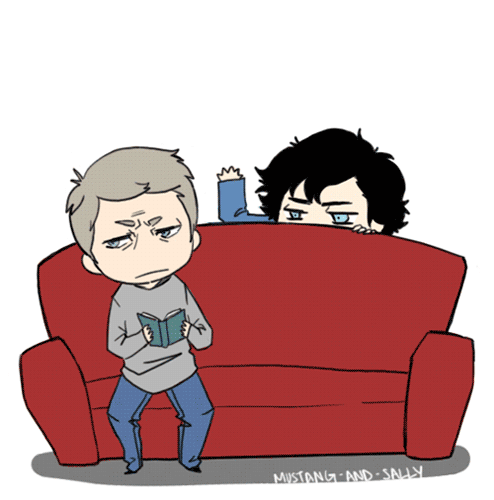

W języku angielskim przysłówki, podobnie jak w języku polskim odpowiadają na pytania: jak? gdzie? kiedy?
Aby utworzyć przysłówek z przymiotnika (choć czasami może on być utworzony np. od rzeczownika), w większości przypadków dodajemy końcówkę –ly.
- Jeśli przymiotnik kończy się na –„le”, usuwamy –„e” i dodajemy samo –„y”.
- Jeśli przymiotnik kończy się na –„y”, usuwamy -„y” i dodajemy –„ily”.
- Jeśli przymiotnik kończy się na –„ic”, dodajemy –ally”.
polite (grzeczny) – politely (grzecznie)
comfortable (wygodny) – comfortably (wygodnie)
easy (swobodny) – easily (swobodnie)
dramatic (dramatyczny) – dramatically (dramatycznie)
cold (zimny) – cold (zimno)
good (dobry) – well (dobrze)
fast (szybki) – fast (szybko)
hard (trudny) – hard* (trudno)
high (wysoki) – high (wysoko)
late (późny) – late (późno)
small (mały) – small (mało)
* przysłówek hard jest taki sam, jak przymiotnik, od którego pochodzi. Słowo hardly oznacza ledwie, prawie nie,
np. She hardly knows you (Ona prawie cię nie zna), I hardly rest (Prawie w ogóle nie odpoczywam).
W przypadku jednosylabowych przysłówków bez końcówki –ly, aby utworzyć stopień wyższy dodajemy – podobnie jak w przypadku przymiotników - końcówkę –er, a w stopniu najwyższym –est.
fast (szybko) – faster (szybciej) – the fastest (najszybciej)
high (wysoko) – higher (wyżej) – the highest (najwyżej)
Do wielosylabowych przysłówków dodajemy more (stopień wyższy) i the most (stopień najwyższy)
comically (śmiesznie) – more comically – (śmieszniej) the most comically (najśmieszniej)
solemnly (uroczyście) – more solemnly – (bardziej uroczyście) the most solemnly (najbardziej uroczyście)
well (dobrze) – better (lepiej) – the best (najlepiej)
badly (źle) – worse (gorzej) – the worst (najgorzej)
far (daleko) – farther / further (dalej) – the farthest / the furthest (najdalej)
little (mało) – less (mniej) – the least (najmniej)
much / many (dużo) – more (więcej) – the most (najwięcej)
Stopień niższy i najniższy tworzymy za pomocą less oraz the least: comfortably (wygodnie) – less comfortably (mniej wygodnie) – the least comfortably (najmniej wygodnie) patiently (cierpliwie) – less patiently (mniej cierpliwie) – the least patiently (najmniej cierpliwie)
